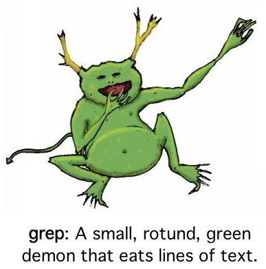

The SZS Presentation Standards

Motivation
Success and No-success Values
- % SZS status ontology_value for logical_data_identifier
- Software specific information can be appended after a :
- % SZS status Unsatisfiable for SYN075+1
- % SZS status InputError for SYN075+1 : Cannot read FOF
- Present as early as possible, before justifying logical data
Dataform Values for Output Logical Data
- % SZS output start ontology_value for logical_data_identifier
output_logical_data
% SZS output end ontology_value for logical_data_identifier
- % SZS output start CNFRefutation for SYN075-1
CNF_refutation
% SZS output end CNFRefutation for SYN075-1 : Completed in CNF conversion